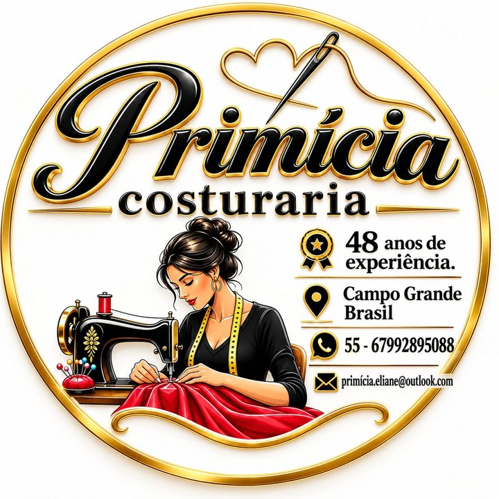

Confecção para pequenas marcas · Campo Grande
Você tem a ideia.
Nós fazemos a sua marca acontecer.
Da foto ou do desenho até o lote pronto: modelagem, peça-piloto, compra do tecido e produção, com o cuidado de quem costura há 48 anos.
- 48 anos de costura
- A partir de 1 peça na costura criativa
- Lotes pequenos para marcas começando

Para quem tem uma marca na cabeça
Escolha o seu segmento e vá direto para o orçamento.
Como funciona
- 1
Você conta a ideia
Manda uma foto, um desenho ou uma peça de referência e diz quantas peças quer.
- 2
Modelagem e peça-piloto
A Eliane cria o molde e costura a primeira peça para você ver, vestir e ajustar.
- 3
Você aprova
Com a piloto aprovada, fechamos tecido, tamanhos, valor e prazo.
- 4
Produção do lote
As peças são produzidas uma a uma, com acabamento conferido antes da entrega.
Simule seu orçamento
Leva uns 2 minutos. No fim, você manda tudo pronto para o WhatsApp da Eliane.
Estimativa para
Isto é uma estimativa. O valor final é fechado depois que a Eliane vê a sua referência e a peça-piloto é aprovada.
48anos de costura
Quem costura a sua marca
A Primícia é o ateliê da Eliane, que costura há 48 anos em Campo Grande. Ela trabalha com marcas que estão começando: gente com uma ideia boa e sem confecção para produzir.
Aqui você fala direto com quem corta e costura. Sem intermediário, sem lote gigante obrigatório, com a peça-piloto na sua mão antes de produzir.
Perguntas frequentes
Qual é o pedido mínimo?
Na confecção para marcas, a partir de 20 peças por modelo. Na costura criativa (nécessaires, ecobags, naninhas, kits), a partir de 1 peça.
Quem compra o tecido?
Você escolhe. A Primícia pode comprar tecido e aviamentos, ou você entrega o seu tecido e paga só a costura.
Preciso ter o molde?
Não. A modelagem e a peça-piloto fazem parte do serviço. Se você já tem molde ou piloto aprovada, essa etapa sai do orçamento.
Quanto tempo demora?
A peça-piloto fica pronta em cerca de 1 a 2 semanas. O prazo do lote depende da quantidade e do detalhe; o simulador mostra uma estimativa.
Atende outras cidades?
Sim. O ateliê fica em Campo Grande (MS), e as peças podem ser enviadas para qualquer lugar do Brasil, com frete à parte.
Vocês fazem etiqueta e embalagem?
Hoje não. Você pode mandar as suas etiquetas para serem costuradas nas peças.